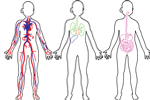
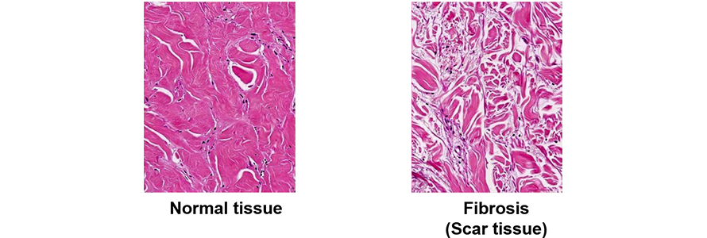
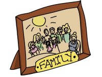

Module: Scleroderma: Basic Overview
Elaine A. Furst, RN, MA, Janet L. Poole, Ph.D., OTR/L, Cindy Mendelson, PhD, RN, Dinesh Khanna, MD, MS
Scleroderma is an autoimmune disease that can affect the skin, muscles, and joints. It is also called systemic sclerosis because it can affect internal organs such as the gastrointestinal (GI) tract, kidneys, lungs, and heart.
Scleroderma can lead to thickening of the blood vessels and scarring of affected tissues, such as the skin, lungs, kidneys, and esophagus. The cause is unknown, but the autoimmune processes result in abnormal collagen buildup.
Collagen is found in skin, tendons, joints, ligaments, and organs, such as the kidneys, lungs, and heart. Collagen is the basic substance that forms scar tissue, which helps the body repair after injury. However, too much collagen interferes with vital systems by replacing functioning cells with “scars.” When this happens in the lungs, for example, it results in pulmonary fibrosis (scarring in the lungs) which causes problems with breathing.
The cause of scleroderma is unknown, but a specific genetic background, combined with a potential trigger, activates the immune system. This results in damage to the blood vessels and causes the cells to make too much collagen in the skin and other internal organs.
Family and twin studies have shown that relatives of people with scleroderma frequently have other autoimmune diseases. These include rheumatoid arthritis, systemic lupus erythematosus, and Graves’ (hyperactive thyroid) or Hashimoto’s (underactive thyroid) disease.